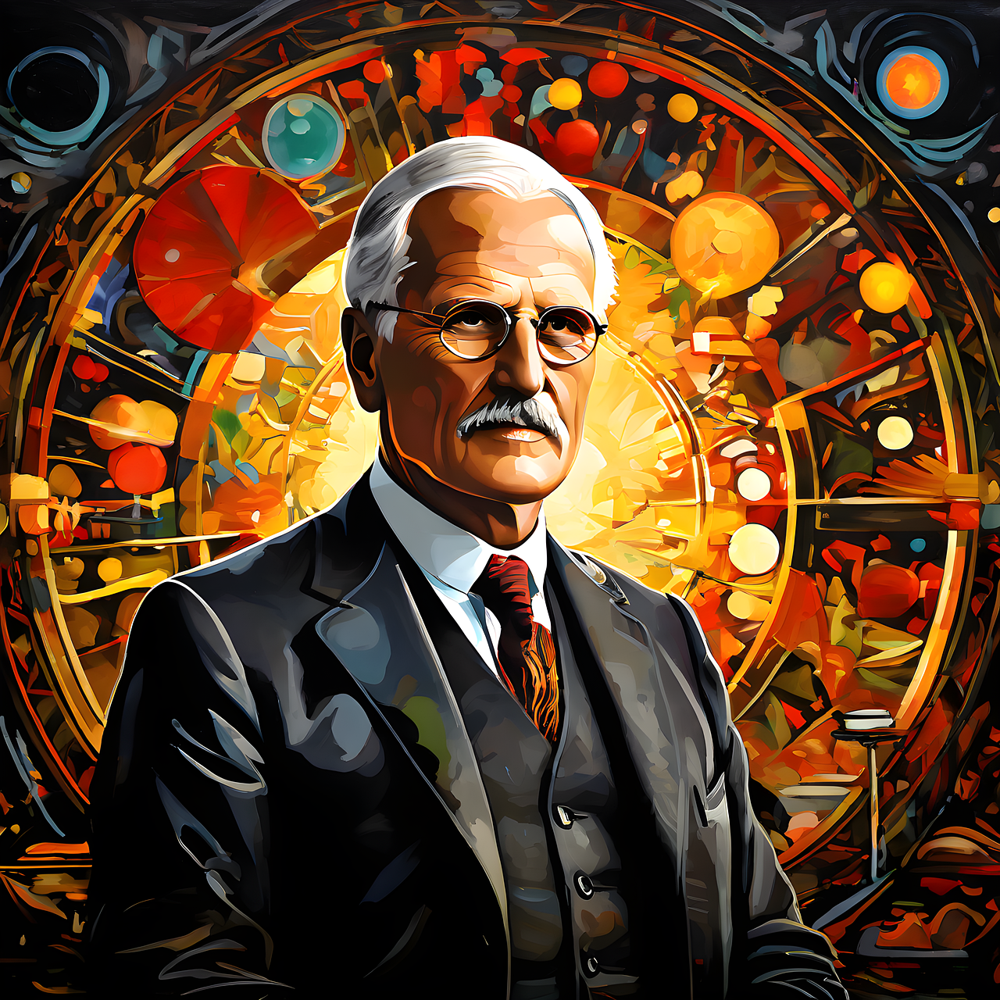

Carl Gustav Jung (1875-1961) was a Swiss psychiatrist and psychoanalyst who founded analytical psychology. His work has been influential not only in psychiatry but also in philosophy, anthropology, archaeology, literature, and religious studies. He was a prolific writer, though many of his works were not published until after his death.
Jung was born in Kesswil, Switzerland, the son of a Protestant minister. He studied medicine at the University of Basel and later worked at the Burghölzli psychiatric hospital in Zurich. He was a student of Sigmund Freud and initially worked closely with him, but later developed his own theories and methods.
| Archetype | Description | Example |
|---|---|---|
| The Self | Represents wholeness and integration of the psyche | Buddha, Christ, Mandala |
| The Shadow | The unconscious, darker aspects of the personality | The Joker, Darth Vader |
| The Anima/Animus | The feminine side in men (anima) / masculine side in women (animus) | Femme fatale (anima), warrior hero (animus) |
| The Persona | The social mask we wear to interact with others | Superman, James Bond |
| The Hero | The figure who overcomes obstacles and saves the day | Harry Potter, Luke Skywalker |
| The Trickster | The mischievous figure who disrupts the status quo | Loki, Bugs Bunny |